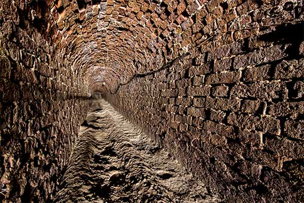

До появления главной питьевой артерии Москвы город довольствовался водой из Москвы-реки, а также ее мелководными загрязненными притоками – Яузой, Неглинкой, Нищенкой, Черногрязкой и другими. Кроме того, в Москве насчитывалось немногим менее 900 прудов, вода в большинстве из которых ввиду отсутствия канализации была совершенно непригодна для питья...
Выходом из ситуации были колодцы, абсолютное большинство из которых, однако, располагались в p частных усадьбах; в общем же доступе во второй половине XVIII в. находилось только три – Адроньевский, Трёхгорный и Преображенский. Потому, из-за нехватки чистой питьевой воды санитарные условия в городе периодически приводили к вспышкам тяжелых инфекционных заболеваний. Так, в 1771 году эпидемия чумы привела к гибели четверти населения города.
 Первый общегородской водопровод в Москве был полностью самотечным - вода текла по кирпичным галереям. Первым трубопроводом, построенным в России, был Мытищинский водопровод, именуемый в некоторых исторических документах Екатерининским. Работа над объектом, который до 1937 года являлся главным питьевым источником, началась по приказу императрицы в 1778 и окончена в 1805 году. Проект был разработан военным инженером Фридрихом Бауэром.
На строительство было выделено порядка 1,2 млн. рублей, о чем свидетельствует сохранившийся Указ от 27 июля 1779 года. В качестве рабочей силы ежедневно выделялось несколько сотен солдат. Однако начавшаяся в 1787 году Русско-турецкая война помешала строительству; в результате сдача объекта была на 26 лет. С приходом к власти Павла I на организацию водопровода были выделены дополнительные средства.
После смерти инженера Бауэра строительство возглавил Иван Кондратьевич Герард, который пересмотрел изначальные расчеты и увеличил количество ключевых бассейнов для сбора грунтовых вод до 43 штук. По замыслу инженера, вода, собранная в мытищинских ключах, благодаря естественному уклону, направлялась в город через Громовой ключ по кирпичной галерее, ширина которой составляла 3 фута (порядка 1 м). Общая длина трубопровода в итоге составила более 20 км. В качестве водохранилища для забора питьевой воды выступил Самотецкий пруд, который находился на возвышенности относительно города, что упрощало подачу воды.
В первые годы эксплуатации Мытищинский водопровод представлял собой фантастическую для своего времени композицию, состоящую из множества фонтанов и акведуков, и воспринимался как самое настоящее чудо и повод для гордости. Водопроводная галерея пересекала город, попадая через Сокольники и Каланчевскую площадь на Трубную, где для забора воды был установлен специальный фонтан.
По вопросам заказа нужной трубопроводной арматуры обращайтесь к нашему менеджеру.
Звоните!
{kind=link}